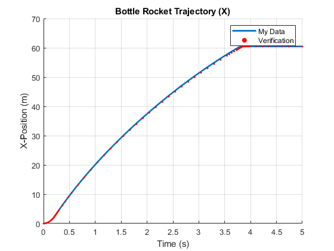
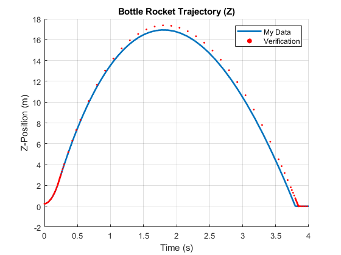
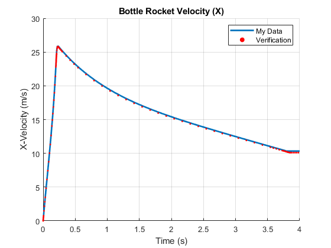
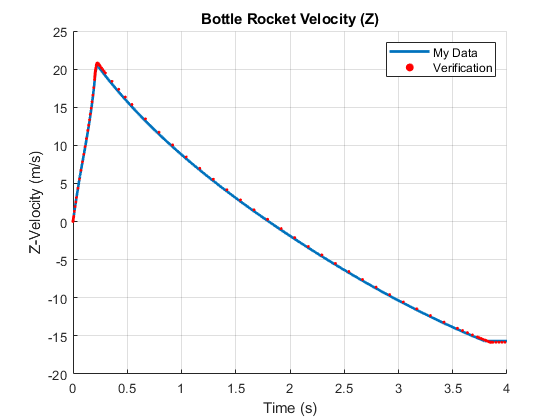
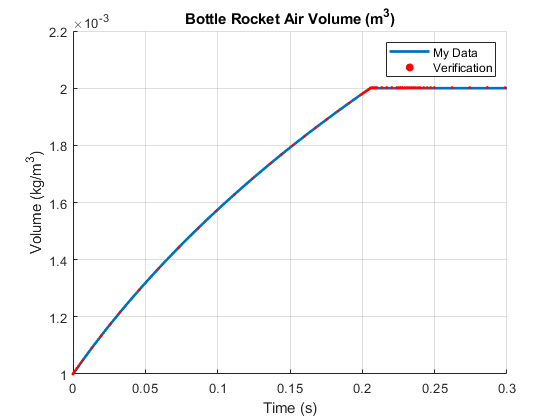
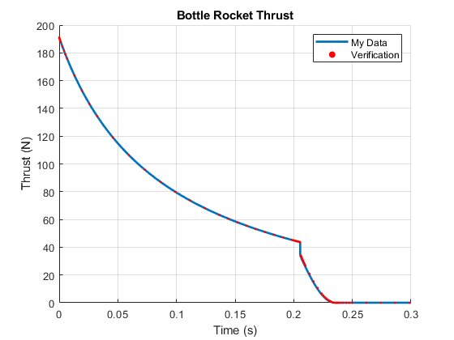

Contents
ASEN 2012: Project 2: Bottle Rocket Trajectory
by: [Shane Billingsley] SID: [110231742] date created: [11/11/22] last modified: [11/16/22]
PURPOSE: The purpose of this script is to integrate the trajectory of a water bottle rocket, using Newton's Laws of Motion, and equations governing the pressure and volume of air within the rocket.
To accomplish this, the script defines a function to feed into ode45 for integration, and then plots the integrated data vs. a given verification case.
INPUTS: The code requires a verification case for comparison. All other input values are set using the getConst function. OUTPUTS: The code outputs plots of an integrated bottle rocket trajectory, defined in terms of position and velocity in the x and z directions. Rocket thrust vs. time is also plotted. ASSUMPTIONS: We assume that atmospheric conditions at launch can be treated as constant (i.e. the rocket does not go high enough for these values to change.) We assume that forces in the y-direction are negligible for this calculation. We assume that the drag coefficient of the rocket is constant (i.e. it does not change with orientation of the rocket.) We assume that the expansion of air in the rocket, and its escape through the throat, is isentropic.
% housekeeping clc; clear all; % import comparison data load ("project2verification.mat"); %define initial conditions for integration const = getConst(); %define constants for main script tspan = [0 5]; %set time span for integration IC = [const.p0;const.v0;const.V0;const.m_water;const.m_air]; %set initial conditions %state vector contains 9 variables [position(x,y,z),velocity(x,y,z),air %volume, water mass, air mass] opts = odeset('RelTol',1e-6,'AbsTol',1e-9); %set tolerances for ode45 %integrate trajectory using ode45, drumroll please [t,y] = ode45(@(t,X) rocketEOM(t,X),tspan,IC,opts); % extract additional data from rocketEOM function % most importantly thrust, but also other values for debugging purposes data = zeros(length(t),4); for i = 1:length(t) [~,data(i,:)]=rocketEOM(t(i),y(i,:)); end
plot results vs. verification case
figure(1); % plot x-position hold on; grid on; plot(t,y(:,1),"LineWidth",2); scatter(verification.time,verification.distance,5,"red","filled","o"); title ("Bottle Rocket Trajectory (X)"); xlabel ("Time (s)"); ylabel ("X-Position (m)"); legend ("My Data","Verification"); hold off; % figure(2); % plot y-position % hold on; grid on; % plot(t,y(:,2),"LineWidth",2); % title ("Bottle Rocket Trajectory (Y)"); % xlabel ("Time (s)"); % ylabel ("Y-Position (m)"); % hold off; figure(3); % plot z-position hold on; grid on; plot(t,y(:,3),"LineWidth",2); scatter(verification.time,verification.height,5,"red","filled","o"); title ("Bottle Rocket Trajectory (Z)"); xlabel ("Time (s)"); ylabel ("Z-Position (m)"); xlim([0 4]); legend ("My Data","Verification"); hold off; figure(4); % plot x-velocity hold on; grid on; plot(t,y(:,4),"LineWidth",2); scatter(verification.time,verification.xVelocity,5,"red","filled","o"); title ("Bottle Rocket Velocity (X)"); xlabel ("Time (s)"); ylabel ("X-Velocity (m/s)"); xlim([0 4]); legend ("My Data","Verification"); hold off; % figure(5); % plot y-velocity % hold on; grid on; % plot(t,y(:,5),"LineWidth",2); % title ("Bottle Rocket Velocity (Y)"); % xlabel ("Time (s)"); % ylabel ("Y-Velocity (m/s)"); % hold off; figure(6); % plot z-velocity hold on; grid on; plot(t,y(:,6),"LineWidth",2); scatter(verification.time,verification.zVelocity,5,"red","filled","o"); title ("Bottle Rocket Velocity (Z)"); xlabel ("Time (s)"); ylabel ("Z-Velocity (m/s)"); xlim([0 4]); legend ("My Data","Verification"); hold off; figure(7); % plot air volume hold on; grid on; plot(t,y(:,7),"LineWidth",2); scatter(verification.time,verification.airVolume,5,"red","filled","o"); title ("Bottle Rocket Air Volume (m^3)"); xlabel ("Time (s)"); ylabel ("Volume (kg/m^3)"); xlim([0 0.3]); legend ("My Data","Verification"); hold off; figure(9); % plot thrust hold on; grid on; plot(t,data(:,1),"LineWidth",2); scatter(verification.time,verification.thrust,5,"red","filled","o"); title ("Bottle Rocket Thrust"); xlabel ("Time (s)"); ylabel ("Thrust (N)"); xlim([0 0.3]); legend ("My Data","Verification"); hold off; % figure(10); % plot pressure % hold on; grid on; % scatter(t,data(:,2),5,"red","filled","o"); % title ("Bottle Rocket Air Pressure"); % xlabel ("Time (s)"); % ylabel ("Pressure (Pa)"); % xlim([0 0.3]); % hold off; %output final comparison values to the command window disp("Max Altitude (My Data)"); disp(max(y(:,3))); disp("Max Altitude (Verification)"); disp(max(verification.height)) disp ("Max Distance (My Data)"); disp (max(y(:,1))); disp ("Max Distance (Verification)"); disp (max(verification.distance));
Max Altitude (My Data) 16.9310 Max Altitude (Verification) 17.3709 Max Distance (My Data) 60.4677 Max Distance (Verification) 60.4487     
Subfunction rocketEOM. This is the subfunction called by ODE45.
function [dX,data] = rocketEOM(t,X) % % Inputs: t = anonymous time variable % X = anonymous state vector containing % = [p_x;p_y;p_z;v_x;v_y;v_z;air volume;mass of water, mass of air] % % Outputs: dX = derivative state vector containing % = [dp/dx;dp/dy;dp/dz;dv/dx;dv/dy;dv/dz;dV/dt;dm_w/dt;dm_a/dt] % % Methodology: function used for integrating the flight of a water bottle % rocket % % Extract state vector p = [X(1);X(2);X(3)]; % From the variable X coming in, extract the indices % corresponding to position v = [X(4);X(5);X(6)]; % From the variable X coming in, extract the indices % corresponding to velocity V = X(7); % Extract the index corresponding to volume of air m_w = X(8); % Extract the index corresponding to mass of water m_a = X(9); % Extract the index corresponding to mass of air const = getConst(); %define constants within the function % set heading vector and adjust for wind v_rel_vec = v-const.w0; v_rel_mag = norm(v_rel_vec); if norm(p) <= const.Ls %rocket still on launch stand h = const.h0; else h = v_rel_vec/v_rel_mag; %heading vector free to change %EQ 2 end %determine air pressure at two different phases of flight if V <= const.V % before water is exhausted P = const.P0*((const.V0/V)^const.gamma); %EQ 5 else % after water is exhausted P = const.P_end*((m_a)/const.m_air)^const.gamma; %EQ 16 end % Determine the phase of flight of the system to write the proper equations of motion % using if statements to check the relevant state variables if V <= const.V % check that volume of air is less than volume of the % bottle rocket % phase 1: expelling water % Calculate forces for Newton's Second Law fGrav = [0;0;-((m_w+m_a+const.m_dry)*const.g0)]; %EQ 1 fThrust = h*(2*const.C_dis*const.At*(P-const.Pa)); %EQ 9 fDrag = -h*(0.5*const.Ac*const.C_drag*const.rho_air*(v_rel_mag^2)); %EQ 4 % define change in mass dm_wdt = -(const.C_dis*const.At*sqrt(2*const.rho_water*(P-const.Pa))); %EQ 6 dm_adt = 0; % define change in volume dVdt = const.C_dis*const.At*... %EQ 10 sqrt((2/const.rho_water)*(const.P0*((const.V0/V)^const.gamma)-const.Pa)); % define values for debugging purposes M_e = 0; flag = 10; elseif P >= const.Pa % check that air pressure is greater than ambient % air pressure % phase 2: expelling air % Calculate forces for Newton's Second Law fGrav = [0;0;-((m_w+m_a+const.m_dry)*const.g0)]; %EQ 1 fDrag = -h*(0.5*const.Ac*const.C_drag*const.rho_air*(v_rel_mag^2)); %EQ 4 %define critical pressure P_crit = P*((2/(const.gamma+1))^(const.gamma/(const.gamma-1))); %EQ 17 % Check for choked flow through the throat if P_crit > const.Pa %choked flow rho = m_a/const.V; %find current air density in bottle %EQ 18 T = P/(rho*const.R_air); %find current temperature in bottle %EQ 18 P_e = P_crit; %define pressure at the exit %EQ 18 M_e = 1; %define Mach number at the exit T_e = (2/(const.gamma+1)*T); %define temperature at the exit %EQ 18 rho_e = P_e/(const.R_air*T_e); %define density at the exit %EQ 18 V_e = M_e*sqrt(const.gamma*const.R_air*T_e); %define exit velocity %EQ 18 % define values for debugging purposes flag = 21; else %not choked flow rho = m_a/const.V; %find current air density in bottle %EQ 19 T = P/(rho*const.R_air); %find current temperature in bottle %EQ 19 P_e = const.Pa; %define pressure at the exit %EQ 19 %define Mach number at the exit M_e = sqrt((((P/const.Pa)^((const.gamma-1)/const.gamma))-1)*... (2/(const.gamma-1))); %EQ 19 %define temperature at the exit T_e = T/((((const.gamma-1)/2)*M_e^2)+1); %EQ 19 rho_e = const.Pa/(const.R_air*T_e); %define density at the exit %EQ 19 V_e = M_e*sqrt(const.gamma*const.R_air*T_e); %define exit velocity %EQ 19 % define values for debugging purposes flag = 22; end % define change in mass dm_adt = -const.C_dis*rho_e*const.At*V_e; %EQ 21 dm_wdt = 0; fThrust = h*(((-dm_adt)*V_e)+((P_e-const.Pa)*const.At)); %EQ 20 % define change in volume dVdt = 0; elseif p(3) >= 0 % check that the rocket is above the ground % phase 3: ballistic phase % Calculate forces for Newton's Second Law fGrav = [0;0;-((m_w+m_a+const.m_dry)*const.g0)]; %EQ 1 fThrust = [0;0;0]; fDrag = -h*(0.5*const.Ac*const.C_drag*const.rho_air*(v_rel_mag^2)); %EQ 4 % define change in mass dm_wdt = 0; dm_adt = 0; % define change in volume dVdt = 0; % define values for debugging purposes M_e = 0; flag = 30; else % after rocket has landed, stop any changes fThrust = [0;0;0]; fGrav = [0;0;0]; fDrag = [0;0;0]; v = [0;0;0]; dm_adt = 0; dm_wdt = 0; dVdt = 0; M_e = 0; flag = 40; end % expression for net force and acceleration per Newton's Second Law fnet = fThrust + fGrav + fDrag; %EQ 1 %forces are signed properly in previous steps a = fnet/(m_a+m_w+const.m_dry); % calculate acceleration dX = [v;a;dVdt;dm_wdt;dm_adt]; %create output derivative vector using changed variables data = [norm(fThrust),P,M_e,flag]; %output thrust data and debugging values end
Subfunction getConst which sets up the constants needed to solve this problem.
function const = getConst() % % Inputs: N/A % % Outputs: const = structure containing initial conditions, physical % constants, given rocket characteristics, and other values not changing % with time. % % Methodology: function used to define a constant structure for ode45 integration % % initial conditions const.p0 = [0;0;0.25]; % initial position vector (m) const.v0 = [0;0;0]; % initial velocity vector (m/s) const.w0 = [0;0;0]; % initial wind vector (m/s) const.h0 = [sqrt(2)/2;0;sqrt(2)/2]; % initial heading vector (m) const.T0 = 300; % initial temperature (K) const.P0 = 344642.86+83403.57; % gage pressure+ambient pressure (Pa) (N/m^2) const.Vw = 0.001; % initial volume of water (m^3) const.Ls = 0.5; % length of launch stand (m) % properties of the bottle rocket const.m_dry = 0.15; % dry mass of bottle rocket (kg) const.d = 0.105; % diameter of the bottle rocket (m) const.d_t = 0.021; % diameter of the rocket throat (m) const.V = 0.002; % volume of empty bottle rocket (m^3) const.C_dis = 0.8; % discharge coefficient of the rocket const.C_drag = 0.5; % drag coefficient of the rocket % physical constants const.g0 = 9.81; % gravitational acceleration (m/s^2) const.Pa = 83403.57; % ambient air pressure at launch altitude (Pa) (N/m^2) const.rho_air = 0.961; % density of ambient air at launch altitude (kg/m^3) const.rho_water = 1000; % density of water (kg/m^3) const.gamma = 1.4; % ratio of specific heats for air const.R_air = 287; % R-value for air (J/kg*K) % some derived properties const.V0 = const.V-const.Vw; %initial volume of air const.m_air = ... % initial mass of air in the bottle rocket (kg) ((const.P0)*const.V0)/(const.R_air*const.T0); const.m_water = ... % initial mass of water in the bottle rocket (kg) (const.rho_water*const.Vw); const.m_wet = ... % initial wet mass of the bottle rocket (kg) const.m_dry + const.m_air + const.m_water; %EQ 12 const.P_end = ... % air pressure when water is exhausted (Pa) (N/m^2) const.P0*((const.V0/const.V)^const.gamma); %EQ 14 const.T_end = ... % air temperature when water is exhausted (K) const.T0*((const.V0/const.V)^(const.gamma-1)); %EQ 15 const.Ac = pi * const.d^2 * (1/4); % cross-sectional area of rocket (m^2) const.At = pi * const.d_t^2 * (1/4); %cross-sectional area of the throat (m^2) end